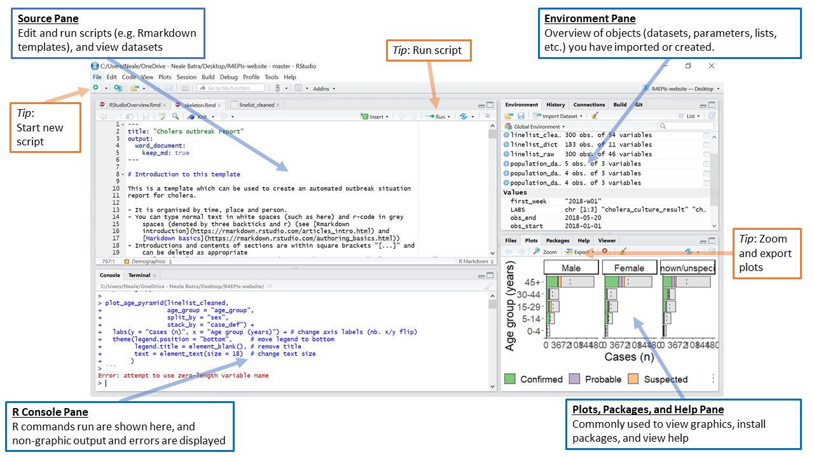
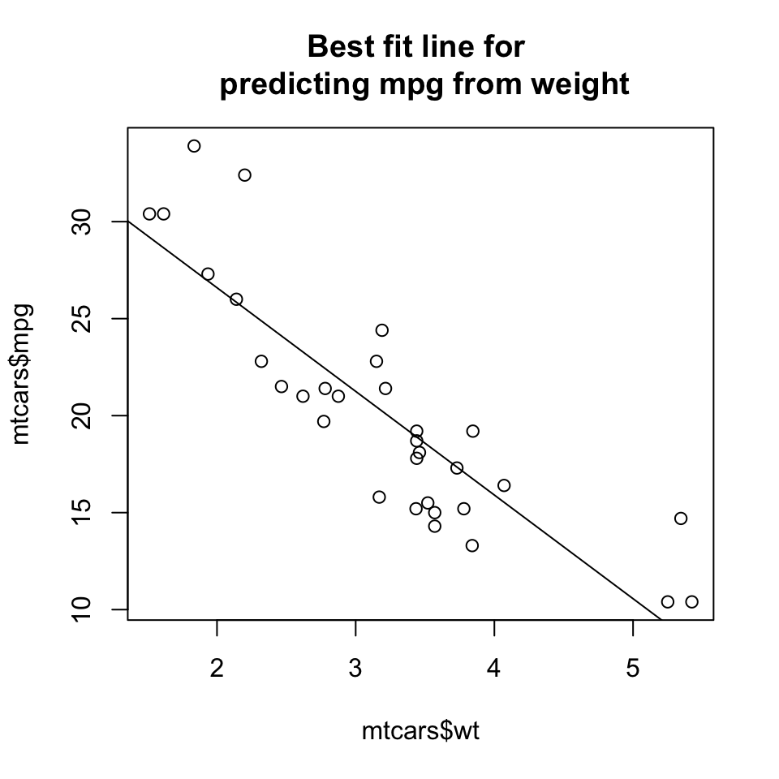
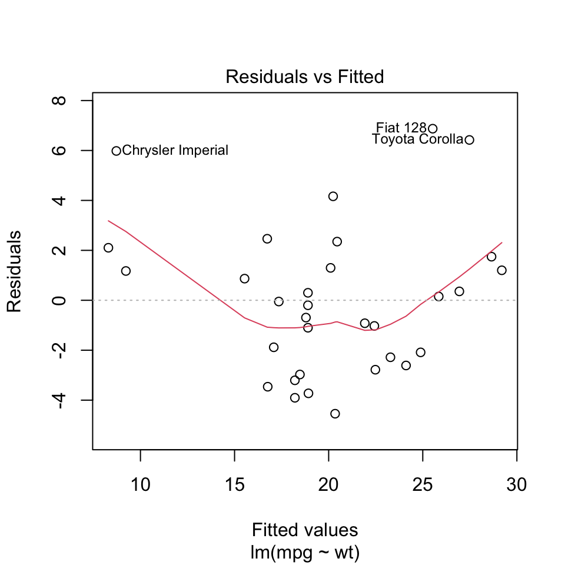
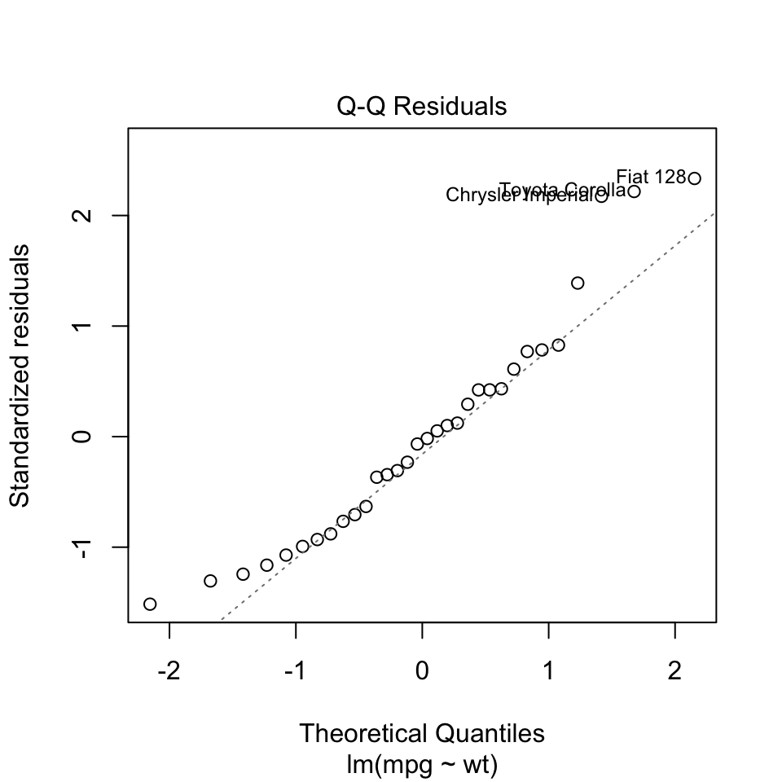
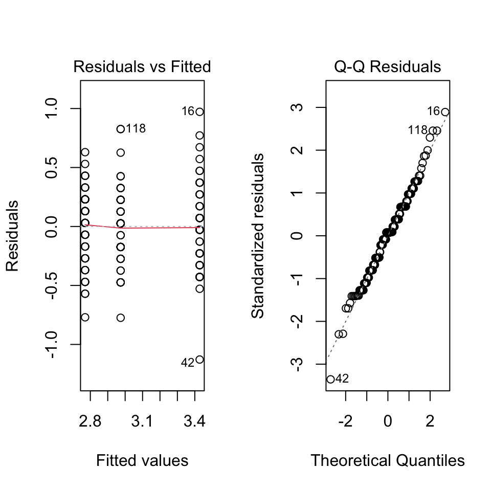

Kapital 1 Grundlæggende R

“Det er ikke, fordi noget er svært, at vi ikke tør, det er, fordi vi ikke tør, at noget er svært.” - Seneca
1.1 Inledning til kapitel
Først og fremmest, velkommen til kurset! Det her dokument er kursusnotaterne, som indeholder bla. videoer, forklaringer og problemstillinger, og vi opdaterer dem løbende gennem hele forløbet. Vær opmærksom på, at der også vil være flere dokumenter på Absalon vedrørende forelæsninger, workshops og løsningerne til øvelserne.
I dette kapitel opsummerer vi nogle grundlæggende elementer inden for R og statistik, der betragtes som forudsætninger i dette kursus. Selvom vi i kurset skifter hurtigt over til tidyverse-pakken, som erstatter en stor del af funktionaliteten fra den såkaldte base-R, er det stadig vigtigt at have et grundlæggende kendskab til base-R. Hvis du har begrænset erfaring med base-R, anbefaler vi, at du bruger ekstra tid ud over de første mødegange for at nå det nødvendige niveau.
For at bestå kurset forventes det ikke, at du kender til alle detaljer og teorier bag de statistiske metoder, men at du kan anvende dem hensigtsmæssigt i praksis via R og fortolke resultaterne korrekte. Der vil være masser af muligheder for at øve dig I at anvende statistik hele vejen gennem kurset, og under eksamen vil vi ikke stille spørgsmål om metoder, der ikke er dækket i de forskellige øvelser (herunder workshop-opgaver). Lineær regression vil også blive gennemgået i forelæsningerne så vær ikke bekymret hvis du ikke har set det før.
Se gerne også “Quiz - Grundlæggende” på Absalon for at tjekke din forståelse og udfylde eventuelle huller i din viden (OBS! Quizzen er tilgængelig kort tid inden kurset starter).
1.2 RStudio
Vi kommer til at være afhængig af RStudio til at arbejde med bl.a. R Markdown dokumenter. R Markdown er emnet i vores næste lektion og vi går igennem hele emnet så at alle er med uanset jeres mulige tidligere erfaringer.<<
Det allerførste du burde gør, hvis du ikke har installeret RStudio på din computer, er at downloade det gratis på nettet:
https://www.rstudio.com/products/rstudio/download/#download
Følg venligst RStudios egne anvisninger til at få det installeret. Bemærk, at installering af RStudio er ikke det samme som at have R installeret på din computer - man skal installere dem begge to og RStudio er afhængig af R men ikke omvendt.
1.2.1 De forskellige vinduer i RStudio

Figure 1.1: Image source: https://epirhandbook.com/en/r-basics.html
Du kan læse følgende for at få en overblik om de fire forskellige vinduer i RStudio:
https://bookdown.org/ndphillips/YaRrr/the-four-rstudio-windows.html
Her er et kort oversigt:
- Man skriver kode i Source (øverst til venstre)
- Man kører kode ved at tryk CMD+ENTER (eller WIN-KEY+ENTER)
- Koder køres ind i Console (som plejer at være nederst til venstre, selvom det er øverst til højere i billedet). Man kan også skrive koder direkte i Console, men det anbefales generelt ikke, når koden ikke bliver gemt.
- Environment - her kan man se blandt andet, alle objekter i Workspace.
1.3 Working directory
Når man arbejder på et projekt, er det ofte nyttigt at vide, den working directory som R arbejder i - det er den mappe, hvor R forsøger at åbne eller gemme filer, medmindre man angiver et andet sted.
getwd() #se nuværende working directory
list.dirs(path = ".", recursive = FALSE) #se alle mapper indenfor din working directory
setwd("~/Documents/") #angiv en ny working directory (C:/Users/myname/Documents hvis man bruger Windows)Hvis man bruger Windows, skal man husk at skrive en path på følgende måde:
#notrun
setwd("C:/Users/myname/Documents") #enten med /
setwd("C:\\Users\\myname\\Documents") #eller med \\OBS: vi som underiser bruger Mac/Linux, så hvis der er vigtige ting at huske for at bruge Windows, kan vi selvfølgelig også tilføje det her. Bemærk dog, at de allerfleste ting ved R programmering og tidyverse er ens uanset om man bruger Windows eller Mac.
1.4 R pakker
R pakker er i grund og bunden hver kun en samling af funktioner (eller datasæt i nogle tilfælde), der udvider, hvad er tilgængelige i base-R (den R man få, uden at indlæse en pakke). I R er der mange tusind R pakker (op mod 100,000), der er tilgængelige på CRAN (https://cran.r-project.org/). Inden for biologisk forskning er der også mange flere pakker på Bioconductor (https://www.bioconductor.org/), og i mange tilfælde kan R pakker også installeres direkte fra Github.
I dette kursus arbejder vi meget med en pakke der hedder tidyverse. tidyverse er i sig selv faktisk en samling af otte R pakker, som indlæses på en gang. Inden du indlæse pakken, skal du først sikre dig, at pakken er installeret på systemet ved følgende kommando:
Alle pakker på CRAN er installeret på samme måde. Når du faktisk gerne vil bruge en R pakke, skal du først indlæse den ved at bruge library():
## ── Attaching core tidyverse pa
## ✔ dplyr 1.1.4 ✔ readr 2.1.5
## ✔ forcats 1.0.1 ✔ stringr 1.6.0
## ✔ ggplot2 4.0.0 ✔ tibble 3.3.0
## ✔ lubridate 1.9.4 ✔ tidyr 1.3.1
## ✔ purrr 1.2.0
## ── Conflicts ─────────────────
## ✖ dplyr::filter() masks stats::filter()
## ✖ dplyr::lag() masks stats::lag()
## ℹ Use the conflicted package (<http://conflicted.r-lib.org/>) to force all conflicts to become errorsVi kommer til at arbejde med tidyverse pakker fra kapitel tre (vi starter med ggplot2), så det er en god idé at har tidyverse installeret allerede nu, fordi nogle gange kan det tage lang tid til at installere eller opdatere de mange andre mulige pakker, der tidyverse er afhængig af.
Vær opmærksom på, at der nogle gange opstår konflikter når det samme funktionnavn findes i flere pakker - for eksempel, funktionen filter() findes indenfor to forskellige pakker, nemlig dplyr og stats. Når du skriver filter() så ved R ikke, hvilken pakke du mener. I dette tilfælde kan du være mere konkret og skriver desuden pakkenavnen dplyr::filter() eller stats:filter() i stedet for bare filter().
Det er god praksis at indlæse alle pakker du andvender i toppen / i begyndelsen af din script. På denne måde få man hurtig overblik over, hvilke pakker er nødvendige for at få din kode til at fungere.
1.5 Hvor kommer vores data fra?
De forskellige datasæt vi kommer til at arbejde med i kurset stammer fra mange forskellige steder og er ikke nødvendigvis altid relateret til biologi.
1.5.1 Indbyggede datasæt
I R er der mange indbygget datasæt som er meget brugbart for at vise analyse- og programmeringskoncepter, hvilket gøre dem især populært til undervisning. Indbyggede datasæt er ofte tilgængligt indenfor mange pakker, men library(datasets) er den hyppigst brugt (der er også mange indenfor library(ggplot2)). For eksempel, for at indlæse iris-datasættet, kan man bruge data():
Derefter er en dataframe med navnet iris tilgængelig og er også gemt som objekt i workspacen - se den “Environment” fane på højere side i RStudio, eller indtaste ls(), så burde du kunne se objektet. Man kan kun arbejde med objekter når de er en del af workspacen.
## Sepal.Length Sepal.Width Petal.Length Petal.Width Species
## 1 5.1 3.5 1.4 0.2 setosa
## 2 4.9 3.0 1.4 0.2 setosa
## 3 4.7 3.2 1.3 0.2 setosa
## 4 4.6 3.1 1.5 0.2 setosa
## 5 5.0 3.6 1.4 0.2 setosa
## 6 5.4 3.9 1.7 0.4 setosa## Sepal.Length Sepal.Width Petal.Length Petal.Width Species
## 145 6.7 3.3 5.7 2.5 virginica
## 146 6.7 3.0 5.2 2.3 virginica
## 147 6.3 2.5 5.0 1.9 virginica
## 148 6.5 3.0 5.2 2.0 virginica
## 149 6.2 3.4 5.4 2.3 virginica
## 150 5.9 3.0 5.1 1.8 virginica## 'data.frame': 150 obs. of 5 variables:
## $ Sepal.Length: num 5.1 4.9 4.7 4.6 5 5.4 4.6 5 4.4 4.9 ...
## $ Sepal.Width : num 3.5 3 3.2 3.1 3.6 3.9 3.4 3.4 2.9 3.1 ...
## $ Petal.Length: num 1.4 1.4 1.3 1.5 1.4 1.7 1.4 1.5 1.4 1.5 ...
## $ Petal.Width : num 0.2 0.2 0.2 0.2 0.2 0.4 0.3 0.2 0.2 0.1 ...
## $ Species : Factor w/ 3 levels "setosa","versicolor",..: 1 1 1 1 1 1 1 1 1 1 ...## Sepal.Length Sepal.Width Petal.Length Petal.Width
## Min. :4.300 Min. :2.000 Min. :1.000 Min. :0.100
## 1st Qu.:5.100 1st Qu.:2.800 1st Qu.:1.600 1st Qu.:0.300
## Median :5.800 Median :3.000 Median :4.350 Median :1.300
## Mean :5.843 Mean :3.057 Mean :3.758 Mean :1.199
## 3rd Qu.:6.400 3rd Qu.:3.300 3rd Qu.:5.100 3rd Qu.:1.800
## Max. :7.900 Max. :4.400 Max. :6.900 Max. :2.500
## Species
## setosa :50
## versicolor:50
## virginica :50
##
##
## 1.5.2 Importering af data fra .txt fil
Det er meget hyppigt, at man har sin data i formen af en .txt fil eller .xlsx fil på sin computer. En nem måde at åbne en .txt fil er ved at bruge read.table(), som i nedenstående:
data <- read.table("mydata.txt") #indlæse data filen mydata.txt som er i nuværende working directory
head(data)Hvis datasættet i filen har kolonnenavne, skal man huske at bruge header=T for at undgå at den første række med kolonnenavne blive fortolket som data / observationer i stedet for kolonner.
1.5.3 Importering af data fra Excel
Der findes også en hjælpsom pakke fra tidyverset, som hedder readxl, der kan indlæse Excel-ark direkte ind i R:
Hvis man gerne vil referere til en bestemt ark, så kan man bruge en ekstra indstilling:
1.5.4 Kaggle
Hvis du kan lige at øve dig i statistik analyse (udover kurset), er Kaggle en fantastisk ressource til at finde forskellige datasæt. I rigtige mange tilfælde kan man også finde analyser some andre har lavet i R (eller f.eks. Python), hvilket kan være meget inspirerende.
Link hvis interesseret: https://www.kaggle.com/
1.6 Beregninger i R
Her er nogle helt grundlæggende koncepter når man arbejder med R. Du må selvfølgelig gerne springe sektionen over, hvis du allerede har meget erfaring med base-R. Men det kunne være godt at tjekke, om der noget du er ikke stødt på endu. En god tilgang kunne være at arbejde gennem problemstillingerne nedenfor og bruger følgende notater som en reference.
1.6.1 Objekter
Man definere en objekt med brug af <- tegn
OBS! En objekts værdi kan nemt overskrives - vær opmærksomt på rækkefølgen af de udførte kommandoer:
Man kan også kombinere to objekter:
## [1] 9Vær opmærksom på, at man kan ændre på a, uden at b ændre sig automatisk:
## [1] 9Hvis man vil opdatere b, så skal den defineres igen:
## [1] 271.6.2 Vektorer
I R laver man en vektor med c(), hvor man adskiller de forskellige elementer med en komma, som i eksempeln nedenfor:
## [1] 1 2 3 4 5Man er ikke begrænset til tal:
## [1] "cat" "mouse" "horse" "sheep" "dog"1.6.3 Datatyper
Når vi kommer til at arbejde med visualiseringer og data er det vigtigt at have styr på datatyper i vores datasættet. For eksempel har vektoren c("cat","mouse","horse","sheep","dog") ovenpå typen character (forkortet chr) og ikke numeric som c(1,2,3,4,5) (forkortet num):
Her er en list af de vigtigste datatyper:
| Datatype | Navn | Beskrivelse |
|---|---|---|
int |
integer | kun hel tal c(-1,0,1,2,3) |
lgl |
logical | TRUE, TRUE, FALSE, TRUE, FALSE |
chr |
character | c("Bob","Sally","Brian",...) |
fct |
factor | bestemte niveauer e.g. Species: c("setosa","versicola") |
dbl |
double | Tal fk. c(4.3902, 3.12, 4.5) |
lst |
list | forskellige data typer og specifikke elementer kombineret med [[i]] [[1]] [1] c("red","blue") [[2]] [1] TRUE [[3]] [1] c(3,2.3,1.459) |
En datatype, der burde få særlig opmærksomhed er fct (factor). I følgende vektor tea_coffee har vi tekst, men blandt de fem elementer er der kun to forskellige niveauer (nemlig “tea” og “coffee”).
tea_coffee <- c("tea","tea","coffee","coffee","tea")
is.factor(tea_coffee)
## [1] FALSE
tea_coffee
## [1] "tea" "tea" "coffee" "coffee" "tea"Vi vil derfor gerne fortælle R, at tea_coffee indeholder ikke kun tilfældig tekst men at der er en struktur bag indholdet. Derfor bruger vi funktionen as.factor for at lave vektoren om til datatypen fct.
tea_coffee <- as.factor(tea_coffee)
is.factor(tea_coffee)
## [1] TRUE
tea_coffee
## [1] tea tea coffee coffee tea
## Levels: coffee teaDe ‘ekstra’ oplysninger man har når en variabel er en factor bliver vigtigt når man arbejder med visualiseringer - f.eks. hvis vi gerne vil lave et barplot hvor man vil adskille søjlerne efter de to niveauer “tea” og “coffee” (visualiseringer er emnet af lektion 3).
1.7 Dataframes
http://www.r-tutor.com/r-introduction/data-frame
Mange af de ting, som vi laver i R tager udgangspunkten i dataframes (eller datarammer).
mydf <- data.frame("personID" = 1:5, "height" = c(140,187,154,132,165), "age" = c(34,31,25,43,29))
mydf## personID height age
## 1 1 140 34
## 2 2 187 31
## 3 3 154 25
## 4 4 132 43
## 5 5 165 29Man kan få adgang til variabler i en dataframe via dollar tegn $, f.eks. personID fra datarammen mydf:
## [1] 1 2 3 4 5Husk, at vores dataframe, ligesom et matrix (i R: matrix()) har to dimensioner - række og kolonner. Forskellen mellem en matrix og en dataramme er, at datarammer kan indeholde mange forskellige datatyper (herunder numeriske, faktorer, karakterer osv.), mens en matrix indeholder kun numeriske data. For eksempel, alle variabler i den ovenstående dataframe er numeriske, men vi kan godt tilføje en variabel som er ikke-numeriske:
mydf$colour <- c("red","blue","green","orange","purple") #make new variable which is non-numeric
mydf## personID height age colour
## 1 1 140 34 red
## 2 2 187 31 blue
## 3 3 154 25 green
## 4 4 132 43 orange
## 5 5 165 29 purpleDerefter er mydf en dataframe, der blander forskellige datatyper. Følgende objekt er til gengæld en matrix:
## [,1] [,2]
## [1,] 1 4
## [2,] 2 5
## [3,] 3 6Som beskrevet tidligere kan en matrix kun indeholde numeriske data før at gøre matematiske operationer mulig (matrix multiplikation osv.). Men, i dette kursus beskæftiger vi os primært med dataframes (som bliver kaldt for tibbles i tidyverse).
1.7.1 Delmængder af dataframes
Selvom vi kommer til at se på det igen når vi at arbejder med pakken tidyverse, er det vigtigt at forstå, hvordan man laver en delmængde i base-R. Det er et koncept som ofte skaber forvirring.
Når man vil gerne har en bestemt delmængde af en vector, bruger man firkantet paranteser [ ]. Følgende kode giver os de første to værdier fra vectoren a:
## [1] 1 2Bemærk, mens vektorer har kun en dimension, har dataframes to dimensioner. Når man skal lave en delmægde af en dataframe, skal man derfor fortælle R, hvilke rækker og hvilke kolonner skal være med.
For eksempel, hvis vi vil have de første to observationer af kun den anden variabel, skriver man følgende:
## [1] 140 187Hvis vi vil beholde de første to observationer af alle variabler, kan den anden plads være tom:
## personID height age colour
## 1 1 140 34 red
## 2 2 187 31 blueVi kan også angive et kolonnenavn direkte:
## [1] 140 187Man kan få en delmængde af rækkerne ved at:
## personID height age colour
## 2 2 187 31 blue
## 5 5 165 29 purpleHer er en tabel af komparativer, som bliver gentaget når vi kommer til at lave delmængder i tidyverse:
| Komparativ | Beskrivelse |
|---|---|
< |
mindre end / less than |
> |
større end / greater than |
<= |
mindre end eller lig med / less than or equal to |
>= |
større end eller lig med / greater than or equal to |
== |
lig med / equal to |
!= |
ikke lig med / not equal to |
& |
og / and |
%in% |
en del af / part of |
| |
eller / or |
! |
ikke / not |
Komparativen %in% er særlig brugbart og værd at huske:
## personID height age colour
## 1 1 140 34 red
## 3 3 154 25 green
## 5 5 165 29 purpleHer er et eksempel, hvordan man bruger udråbstegnet: personer med personID, der ikke er 1,3 eller 5:
## personID height age colour
## 2 2 187 31 blue
## 4 4 132 43 orange1.8 If/else
If/else kodekonstruktioner er til at udføre forskellige handlinger baseret på om en bestemt betingelse er opfyldt. For eksempel, if med betingelsen number > 0:
## [1] "Number is positive"Hvis betingelsen er sand, udføres den handling indenfor { }, dvs. “Number is positive” printes.
If/else konstruktioner gør det samme, men hvis betingelsen er ikke opfyldt, udføres en alternativ handling:
number <- -5
if (number > 0) {
print("Number is positive")
} else {
print("Number is not positive")
}## [1] "Number is not positive"Man kan også opnå samme resultatet med at bruge den alternative funktion ifelse:
number <- 3
numbers_of_interest <- c(1,3,5,7)
ifelse(test = number %in% numbers_of_interest,
yes = "Number is interesting",
no = "Number is uninteresting")## [1] "Number is interesting"Man behøver ikke at skrive ordene “test”, “yes” og “no” hver gang, så længe man bruger rækkefølgen af argumenterne lige som funktionen forventer:
## [1] "Number is interesting"1.9 Loops
I base-R kan man laver simple loops (løkke) med følgende konstruktion:
## [1] 1
## [1] 2
## [1] 3
## [1] 4
## [1] 5Loops bliver et stort emne senere i kurset (under emnet 8/9).
1.10 Descriptive statistics / beskrivende statistik
1.10.1 Simulere data fra den normalfordeling
Hvis du har brug for at vide mere om den normalfordeling: http://www.r-tutor.com/elementary-statistics/probability-distributions/normal-distribution
Man kan nemt lave sin egne ‘fake’ data ved at simulere det fra en fordeling, der typisk er normalfordelingen, da den er den mest almindelige fordeling i den virkelige verden (husk den klassiske klokkeform). I R kan man anvender funktionen rnorm til at simulere data. Først angiver man antallet af observationer, og derefter den gennemsnitlige værdi og standardafvigelsen (sd), som er de to nødvendige parametre for at beskrive en normalfordeling.
x <- rnorm(25, mean = 0, sd = 1) #standard normalfordeling
x #så har vi 25 værdier fra en normal distribution med mean = 0 og standard deviation = 1## [1] -1.26259321 1.03604350 -0.24083737 -0.71147387 1.17265243 0.57736405
## [7] -1.78858624 1.35838366 4.77780328 -0.84746609 1.97716756 2.17180024
## [13] 1.55851236 -0.01483794 1.34326749 -1.04440099 0.45133505 -0.35687889
## [19] 0.71587272 1.13024961 0.32939008 0.54742019 -0.49036921 1.46669631
## [25] -0.64821683I stedet for at kigge på alle værdier på én gang, vil vi måske kun kigge på de første (eller sidste) værdier:
head(x) #første 6
## [1] -1.2625932 1.0360435 -0.2408374 -0.7114739 1.1726524 0.5773640
tail(x) #sidste 6
## [1] 1.1302496 0.3293901 0.5474202 -0.4903692 1.4666963 -0.6482168
x[1] #første værdi
## [1] -1.262593
x[length(x)] #sidste data point
## [1] -0.6482168Bemærk, at i modsætning til Python og mange andre programmeringssprog, bruger R en ‘1’-baseret indeksering. Det betyder, at den første værdi er x[1] og ikke x[0] som i Python.
1.10.2 Measures of central tendency
| Funktion | Beskrivelse |
|---|---|
mean() |
aritmetisk gennemsnit / arithmetic mean \(\bar{x}_{i} = \frac{1}{n}\sum_{i=1}^{n} x_{i}\) |
median() |
median værdi / median value |
max() |
maksimum værdi / maximum value |
min() |
minimum værdi / minimum value |
var() |
varians / variance \(s^2 = \frac{1}{n-1}\sum_{i=1}^{n} (x_{i} - \bar{x}_{i})^2\) |
sd() |
standardafvigelsen / standard deviation \(s\) |
Lad os afprøve dem på vores simulerede data:
my_mean <- mean(x)
my_median <- median(x)
my_max <- max(x)
my_min <- min(x)
my_var <- var(x)
my_sd <- sd(x)
c(my_mean,my_median,my_max,my_min,my_var,my_sd) #print results## [1] 0.5283319 0.5474202 4.7778033 -1.7885862 1.9101216 1.3820715Man kan også lave et summary af dataen, som består af mange af de statistiker navnt ovenpå:
## Min. 1st Qu. Median Mean 3rd Qu. Max.
## -1.7886 -0.4904 0.5474 0.5283 1.3433 4.77781.10.3 tapply()
tapply() er en meget nyttig funktion i R, som kan bruges til at anvende en funktion på en gruppe af data baseret på værdier i en anden vektor. Funktionen tager tre hovedargumenter: den vektor, som vi ønsker at anvende funktionen på, den vektor, som bruges til at gruppere dataene, og funktionen, som vi ønsker at anvende på hver gruppe. tapply() opdeler dataene i grupper baseret på den anden vektor og anvender funktionen på hver gruppe.
Resultatet af tapply() vil være en vektor, som indeholder resultaterne af funktionen anvendt på hver gruppe af data. For eksempel:
## setosa versicolor virginica
## 5.006 5.936 6.588Vi tog en vektor med navn Sepal.Length, opdeler den efter Species og beregner gennemsnittet ved hjælp af funktionen mean for hver af de tre arter i variablen Species (dvs. setosa, versicolor og virginica). Alternativt kunne man have beregnet gennemsnittet for hver af de tre Species separat (en tilgang, der ikke skalerer godt!):
# gennemsnit Sepal Length for Species setosa
mean_setosa <- mean(iris$Sepal.Length[iris$Species=="setosa"])
# gennemsnit Sepal Length for Species versicolor
mean_versi <- mean(iris$Sepal.Length[iris$Species=="versicolor"])
# gennemsnit Sepal Length for Species virginica
mean_virgin <- mean(iris$Sepal.Length[iris$Species=="virginica"])
c(mean_setosa,mean_versi,mean_virgin)## [1] 5.006 5.936 6.588Det er også værd at kender tapply-koncepten, fordi vi kommer til lære et alternativ i tidyverse (dvs. group_by og summarise).
1.11 Statistike tester
Her er en oversigt over nogle af de mest grundlæggende tests, som man kan udføre på data i R. Vi gå i dybden med teorien bag disse tests (vi håber at du har lært det tidligere), men vi forventer, at du er i stand til at anvende dem korrekt i R og fortolke resultaterne. Hvis du ikke er bekendt med nogle af disse tests, vil der være masser af muligheder for at øve dig i statistik gennem kurset.
t-test: Bruges til at sammenligne to grupper og afgøre, om forskellen mellem deres gennemsnitlige værdier er statistisk signifikant.
ANOVA: Bruges til at sammenligne mere end to grupper og afgøre, om der er statistisk signifikant forskel mellem mindst to af grupperne.
Korrelationsanalyse: Bruges til at afgøre, om der er en statistisk signifikant sammenhæng mellem to variabler.
Regressionsanalyse: Bruges til at afgøre, om der er en statistisk signifikant sammenhæng mellem en uafhængig variabel og en afhængig variabel. Man forudsige værdien af den afhængige variabel baseret på værdien af den uafhængige variabel.
Chi-square test: Bruges til at afgøre, om der er en statistisk signifikant forskel mellem observerede og forventede værdier for kategoriske variabler.
1.11.1 P-værdien
Først og fremmest er det vigtigt at kunne huske p-værdi både i forhold til definitionen og i forhold til hvordan det fortolkes.
P-værdien er sandsynligheden for at observere et resultat lige så ekstremt eller mere ekstremt end det observerede, givet at null-hypotesen er sand. Null-hypotesen er en antagelse om, at der er ikke en signifikant forskel mellem grupper eller variabler i det dataset, som der arbejdes med.
Hvis p-værdien er mindre end det valgte signifikansniveau (typisk 0,05), så betyder det, at det observerede resultat er usandsynligt at opstå ved ren tilfældighed, og null-hypotesen er afvist til fordel for den alternative hypotese om, at der er en signifikant forskel mellem grupper eller variabler i datasættet.
1.11.2 Korrelation
Korrelation måler styrken og retningen af den lineære sammenhæng mellem to kontinuerte variabler, som begge er normalfordelte:
- \(>0\) betyder, at der er en positiv sammenhæng
- \(<0\) betyder, at der er en negativ sammenhæng
- \(=0\) betyder, at der er ingen sammenhængen mellem de to variabler
## [1] 0.8068949Husk dog, at “Correlation does not equal causation” - dvs. at korrelation er bare en sammenhæng og ikke nødvendigvis angiver en årsagssammenhæng mellem to variabler.
Funktionen cor.test() kan bruges til at teste, om korrelationen mellem to variabler er statistisk signifikant. Null-hypotesen antager, at der ikke er nogen korrelation mellem de to variabler i den population som er repræsenteret i datasættet.
##
## Pearson's product-moment correlation
##
## data: cars$speed and cars$dist
## t = 9.464, df = 48, p-value = 1.49e-12
## alternative hypothesis: true correlation is not equal to 0
## 95 percent confidence interval:
## 0.6816422 0.8862036
## sample estimates:
## cor
## 0.8068949Her er p-værdien 0 mindre end 0.05. Derfor konkluderer man, at der er en signifikant sammenhæng mellem de to variabler.
1.11.3 Test for uafhængighed (chi-sq test)
En chi-squared test kan bruges til at undersøge, om der er en statistisk signifikant sammenhæng mellem antallet af observationer i to eller flere forskellige kategorier. For eksempel kan man teste for sammenhængen mellem antallet af kopier af en genvariant og to forskellige farver på blomster i en bestemt planteart.
| 0 | 1 | 2 | |
|---|---|---|---|
| red | 29 | 31 | 16 |
| pink | 11 | 16 | 24 |
Vi vil gerne vide om phenotypen er afhængig af genotypen:
- \(H_{0}:\) antallet af genkopier og phenotypen er uafhængig af hinanden vs
- \(H_{1}:\) antallet af genkopier og phenotypen er afhængig af hinanden
Testen antager at man beregner forventede værdier under nulhypotesen som siger at der er ingen sammenhæng mellem de to kategorier. Derefter sammenligner testen disse forventede værdier med de faktiske, observerede værdier. Man laver testen i R ved at benytte funktionen chisq.test():
##
## Pearson's Chi-squared test
##
## data: dat
## X-squared = 9.9516, df = 2, p-value = 0.006903P-værdien er 0.006903 og mindre end 0.05. Derfor afviser vi nulhypotesen og konkluderer, at der er en signifikant sammenhæng mellem de to variabler. Dette er i overensstemmelse med vores intuition some siger at der er flere røde blomster uden genkopi (0) sammenlignet med røde blomster med to genkopier (2). Det modsatte er sandt for de lyserøde blomster.
1.11.4 1 sample t-test
For at vise en 1-sample t-test, simulerer vi data fra en normalfordeling med middelværdi af 3 ved hjælp af rnorm()-funktionen:
Forestil dig, at du ikke helt stoler på funktionen rnorm() og ønsker at teste, om x stammer fra en normalfordeling med en middelværdi af 3. Nulhypotesen og den alternative hypotese (to-sidet test) er derfor:
- \(H_{0}: \mu = 3\), VS
- \(H_{1}: \mu \neq 3\)
For at lave testen i R, bruger man funktionen t.test() og angiver mu = 3 for at definere vores hypoteser:
##
## One Sample t-test
##
## data: x
## t = -1.1448, df = 9, p-value = 0.2818
## alternative hypothesis: true mean is not equal to 3
## 95 percent confidence interval:
## 2.169968 3.272231
## sample estimates:
## mean of x
## 2.721099Fra resultatet kan man se, at p-værdien er estimeret til 0.2818, og da den er større end 0.05 kan vi ikke afvise nulhypotesen. Derfor kan vi konkluderer at middelværdien af x ikke adskiller sig signifikant fra 3.
Bemærkning: da vi simulerede vores data fra en normalfordeling med en middelværdi af tre, vidste vi i forvejen at det korrekte svar er, at acceptere nullhypotesen. Hvis vi ville have afvist nullhypotesen, ville vi have lavet en type I fejl - dvs. at vi afviser nullhypotesen når det faktisk er sandt.
1.11.5 2-sample t-test
Undersøger om der er en forskel mellem middelværdierne af to grupper - er disse grupper afledt af den samme normalfordeling? Hypoteserne er således (to-sidet):
- \(H_{0}: \mu_{1} = \mu_{2}\), VS
- \(H_{1}: \mu_{1} \neq \mu_{2}\)
I følgende kode simulere vi to stikprøver, der kommer fra en normalfordeling med forskellige middelværdier og bruger funktionen t.test. Man kan definere at de to stikprøver har samme varians ved var.equal = T indenfor funktionen t.test:
##
## Two Sample t-test
##
## data: x and y
## t = -5.4258, df = 18, p-value = 3.729e-05
## alternative hypothesis: true difference in means is not equal to 0
## 95 percent confidence interval:
## -2.700858 -1.193081
## sample estimates:
## mean of x mean of y
## 2.783056 4.730025Hvis man til gengæld ikke kan antage, at variansen er den samme i de to grupper:
x <- rnorm(10, 3, 1)
y <- rnorm(10, 5, 3) #større variance
t.test(x,y,var.equal = F) #var.equal=F er 'default' så man behøver ikke at specifere##
## Welch Two Sample t-test
##
## data: x and y
## t = -2.0238, df = 11.77, p-value = 0.0663
## alternative hypothesis: true difference in means is not equal to 0
## 95 percent confidence interval:
## -3.9077927 0.1483728
## sample estimates:
## mean of x mean of y
## 2.757436 4.637146Bemærk at hvis man kan antage at variansen er den samme, så har man mere power (kræft) til at opdage en virkelig forskel (dvs. få en signifikant forskel som resultat af testen).
1.11.6 Paired t-test / parret t-test
En parret t-test anvender man f.eks. når man har målinger af den samme population af personer i hver stikprøve, og man gerne vil teste om forskellen i værdier mellem de to stikprøver er signifikant. For eksempel hvis vi har “før” og “efter” målinger af de samme 10 personer:
set.seed(320)
before <- rnorm(10, 3, 1)
after <- rnorm(10, 6, 2)
t.test(before, after, paired = T) # definere parret data##
## Paired t-test
##
## data: before and after
## t = -9.3296, df = 9, p-value = 6.356e-06
## alternative hypothesis: true mean difference is not equal to 0
## 95 percent confidence interval:
## -5.415186 -3.301613
## sample estimates:
## mean difference
## -4.358399##
## One Sample t-test
##
## data: before - after
## t = -9.3296, df = 9, p-value = 6.356e-06
## alternative hypothesis: true mean is not equal to 0
## 95 percent confidence interval:
## -5.415186 -3.301613
## sample estimates:
## mean of x
## -4.3583991.11.7 ANOVA (variansanalyse)
Har man flere grupper i stedet for to, kan man bruge ANOVA (analysis of variance eller variansanalyse). Har man en kategorisk variabel med \(k\) grupper, er nul/alternativhypotesen:
- \(H_{0}: \mu_{1} = \mu_{2} = \ldots = \mu_{k}\)
- \(H_{1}:\) ikke alle middelværdier er ens
#simulere data til 3 forskellige grupper fra den normalfordeling med standardafvigelse af 3
group1 <- rnorm(50, 10, 3)
group2 <- rnorm(55, 10, 3)
group3 <- rnorm(48, 5, 3)
#data må være i en dataramme, med vores værdier i den ene kolonne og grupperne i den anden kolonne
y <- c(group1, group2, group3)
x <- c(rep("G1",50), rep("G2",55), rep("G3",48))
mydf <- data.frame("group" = x, "value" = y)For at udføre testen kan man anvende funktionen lm(), som står for “linear model” og kan bruges til at opbygge forskellige modeller. Her definerer vi en model, hvor hver gruppe (G1, G2 og G3 fra variablen x) har sin egen middelværdi. Forskellen mellem disse middelværdier udgør definitionen af vores alternativhypotesen:
Under nulhypotesen til gengæld har alle grupper den samme middelværdi, og derfor behøver vi ikke at inkludere variablen group i modellen. Vi definerer det i modellen ved at skrive 1, som betyder, at forventede værdier for den afhængige variabel value blot er dens middelværdi:
For at sammenligne de to modeller benytter vi funktionen anova() (efter analysis of variance):
## Analysis of Variance Table
##
## Model 1: value ~ 1
## Model 2: value ~ group
## Res.Df RSS Df Sum of Sq F Pr(>F)
## 1 152 2215.4
## 2 150 1509.9 2 705.55 35.047 3.245e-13 ***
## ---
## Signif. codes: 0 '***' 0.001 '**' 0.01 '*' 0.05 '.' 0.1 ' ' 1P-værdien er (<0.05). Nulhypotesen er afvist til fordel for alternativhypotesen, altså modellen, hvor hver gruppe har sin egen middelværdi. OBS! Det er på trods af, at to af tre grupper kommer fra en normalfordeling med præcis de samme middelværdier. Faktisk er det nok at den trejde gruppe har en anden middelværdi.
1.11.8 Lineær regression / linear regression
OBS! Se også venligst videon vedrørende R Markdown (næste emne), hvor Sarah arbejder igennem lineær regression med R.
Formålet af en lineær regression er at måle (en retningsbestemt) relation mellem to kontinuerte variabler. I simpel lineær regression svarer det til, at man vil finde den rette linje gennem punkterne, der bedst beskriver relationen.
Som en eksempel anvender vi datasættet mtcars og definere den afhængige (response) variabel via mpg og den uafhængige (predictor) variabel som wt.

Som beskrevet tidligere, skriver vi relationer i R som f.eks. mpg ~ wt og benytter lm()(lm(mpg~wt,data=mtcars)):
##
## Call:
## lm(formula = mpg ~ wt, data = mtcars)
##
## Coefficients:
## (Intercept) wt
## 37.285 -5.344Vores koefficienter / coefficients beskriver den bedste rette linje:
- Skæringen (intercept): 37.285
- Hældningskoefficient (slope): -5.344
Det betyder, at hvis vægten wt af en bil stiger med 1, så stiger mpg ved -5.344 (det vil sige at mpg reduceres med 5.344).
1.11.9 R-squared bestemmelseskoefficient / koefficient of determination
\(R^2\) eller “forklaringsgraden” (bestemmelseskoefficient) har til formål at forklare, hvor godt vores lineær model passer til de data. For eksempel hvor meget af variansen i mpg forklares af variablen wt?
- Hvis det er tæt på 1 - så er der en meget tæt relation (hvis man kender vægten, så vide man også
mpgmed stor sikkerhed). - Hvis det er tæt på 0 - så er relationen svag - sandsynligheden er høj at der er andre variabler der bedre forklarer variansen i
mpg.
I ovenstående model, kan man se \(R^2\) værdien med summary(mylm).
##
## Call:
## lm(formula = mpg ~ wt, data = mtcars)
##
## Residuals:
## Min 1Q Median 3Q Max
## -4.5432 -2.3647 -0.1252 1.4096 6.8727
##
## Coefficients:
## Estimate Std. Error t value Pr(>|t|)
## (Intercept) 37.2851 1.8776 19.858 < 2e-16 ***
## wt -5.3445 0.5591 -9.559 1.29e-10 ***
## ---
## Signif. codes: 0 '***' 0.001 '**' 0.01 '*' 0.05 '.' 0.1 ' ' 1
##
## Residual standard error: 3.046 on 30 degrees of freedom
## Multiple R-squared: 0.7528, Adjusted R-squared: 0.7446
## F-statistic: 91.38 on 1 and 30 DF, p-value: 1.294e-10Det fortæller os, at \(R^2\) = 0.7528.
1.11.10 Antagelser ved brug af lineær regression
- Normalfordelte residualer
- Residualer har samme spredning (varianshomogenitet)
- Uafhængighed
- Fit er linæer
Koden plot(mylm,which=c(1)) beskriver residualer vs forudsagte (fitted) værdier - de skal være tilfældigt fordelt over plottet og prikkernes varians skal være nogenlunde konstant langt x-aksen (dette afspejles i den flade forløb af den røde linje).

Med koden plot(mylm, which = c(2)) kan man tjekke antagelsen af en normalfordeling. Punkterne skal være nogenlunde tæt på den diagonale linje.

1.11.11 Multiple lineær regression
Her kan man tilføje flere variabler til formlen af vores model.
mylm_disp <- lm(mpg ~ wt + disp, data = mtcars) # opbyg en lineær regressions model
summary(mylm_disp)##
## Call:
## lm(formula = mpg ~ wt + disp, data = mtcars)
##
## Residuals:
## Min 1Q Median 3Q Max
## -3.4087 -2.3243 -0.7683 1.7721 6.3484
##
## Coefficients:
## Estimate Std. Error t value Pr(>|t|)
## (Intercept) 34.96055 2.16454 16.151 4.91e-16 ***
## wt -3.35082 1.16413 -2.878 0.00743 **
## disp -0.01773 0.00919 -1.929 0.06362 .
## ---
## Signif. codes: 0 '***' 0.001 '**' 0.01 '*' 0.05 '.' 0.1 ' ' 1
##
## Residual standard error: 2.917 on 29 degrees of freedom
## Multiple R-squared: 0.7809, Adjusted R-squared: 0.7658
## F-statistic: 51.69 on 2 and 29 DF, p-value: 2.744e-10Her kan man se, at med tilføjelsen af variablen disp, er \(R^2\) steget til 0.7809. Bemærk, at jo flere variabler man tilføjer til modellen, jo større bliver \(R^2\)-værdien. Den modificeret \(R^2\) værdi er lavere fordi den prøver at tage højde for kompleksiteten af modellen (mængden af parametre der er).
Variablen disp er faktisk ikke selv signifikant når der er taget højde for variablen wt (p-værdien 0.0636 - tjek, at du selv kan finde værdien i resultatet).
Hvis en af de uafhængige variabler er kategorisk, bruger man funktionen anova til at teste effekten af den variabel. For eksempel har variablen cyl 3 mulige værdier (niveauer) - 4, 6 og 8. Vi kan tage op variablen i vores model:
##
## Call:
## lm(formula = mpg ~ wt + factor(cyl), data = mtcars)
##
## Residuals:
## Min 1Q Median 3Q Max
## -4.5890 -1.2357 -0.5159 1.3845 5.7915
##
## Coefficients:
## Estimate Std. Error t value Pr(>|t|)
## (Intercept) 33.9908 1.8878 18.006 < 2e-16 ***
## wt -3.2056 0.7539 -4.252 0.000213 ***
## factor(cyl)6 -4.2556 1.3861 -3.070 0.004718 **
## factor(cyl)8 -6.0709 1.6523 -3.674 0.000999 ***
## ---
## Signif. codes: 0 '***' 0.001 '**' 0.01 '*' 0.05 '.' 0.1 ' ' 1
##
## Residual standard error: 2.557 on 28 degrees of freedom
## Multiple R-squared: 0.8374, Adjusted R-squared: 0.82
## F-statistic: 48.08 on 3 and 28 DF, p-value: 3.594e-11Man kan ikke se effekten af cyl i den ovenstående summary men man kan teste den med anova:
## Analysis of Variance Table
##
## Model 1: mpg ~ wt
## Model 2: mpg ~ wt + factor(cyl)
## Res.Df RSS Df Sum of Sq F Pr(>F)
## 1 30 278.32
## 2 28 183.06 2 95.263 7.2856 0.002835 **
## ---
## Signif. codes: 0 '***' 0.001 '**' 0.01 '*' 0.05 '.' 0.1 ' ' 1Så kan man se, at cyl er signifikant.
1.12 Problemstillinger
Husk quizzen på Absalon, og lav gerne nedenstående øvelser for at øve dine færdigheder i R:
- Øvelser 2-8 er meget grundlæggende og kan godt springes over, hvis man er nogenlunde fortrolig med base-R.
- Vi vil anbefale øvelser 9-15 til alle som en god måde at teste jeres viden.
- Øvelser 16-20 fokuserer på andre statistiske tests i R. Vi kommer tilbage til regression flere gange i kurset, så det vil være en god idé at have kendskab til funktionen
lm()til at opbygge modeller i ANOVA / simpel lineær regression (se også videoen og problemstillingerne knyttet til det næste emne, R Markdown).
1.12.2 Grundlæggende R
2) (helt grundlæggende viden)
Åbn en ny fil i RStudio ved at klikke på “File” > “New File” > “R Script”. Kør følgende kode en linje ad gangen og tjek, om du forstår outputtet.
Husk, at den nemmeste måde at køre kode på er ved at trykke på CMD+ENTER (Mac) eller WIN-KEY+ENTER (Windows).
2+2
2*2
x <- 4
x <- x+2
sqrt(x)
sqrt(x)^2
rnorm(10, 2, 2)
log10(100)
y <- c(1, 4, 6, 4, 3)
class(y)
class(c("a", "b", "c"))
mean(y)
sd(y)
seq(1, 13, by = 3)c(1,2,3,4) > 2 #giver bare TRUE eller FALSE
ifelse(c(1,2,3,4) > 2, "yes", "no") #omsætte TRUE eller FALSE til "yes" eller "no"
ifelse(c(1,2,3,4) >= 2, "yes", "no") #se forskellen
c(1,2,3,4) == 2 #logic
c(1,2,3,4) != 2 #logic3) (helt grundlæggende viden)
Kør følgende kode for at åbne nogle af de indbyggede datasæt, som vi også kommer til at bruge i kurset.
- Prøve
head(),nrow(),summary()osv. - Prøve også f.eks.
?carsfor at se en beskrivelse.
data(iris)
data(cars)
data(ToothGrowth)
data(sleep)
head(chickwts)
data(trees)
#se her for andre:
library(help = "datasets")4) (grundlæggende plots)
Vi viser eksempler for at plotte datasættet “iris”. Prøv også at plotte data af andre indbyggede datasæt, som du har indlæst.
plot(iris$Sepal.Length,iris$Sepal.Width)
hist(iris$Sepal.Width)
boxplot(iris$Sepal.Length~iris$Species)Du kan også gøre plottene mere informativ ved at give dem en titel og navne på akserne. Prøv at finde dokumentationen for plot() ved at skrive ?plot i R-konsollen. Du kan tilføje ylab, xlab og main (titel) i én af plottene. Prøv også at eksperimentere med farver ved at bruge col. Bemærk dog, at vi vil skifte måden at lave plottene, når vi begynder at bruge ggplot2.
5) (dataframes)
Brug datasættet cars (data(cars)) til at:
- Lav et scatter plot med
speedpå x-aksen ogdistpå y-aksen. - Tilføj en ny kolonne med følgende kode:
- Brug
meanpå den nye kolonnefastfor at finde ud af andelen af biler, der er hurtige end 15. - Brug
ifelseså at du fårfastellerslowi din nye kolonne i stedet for TRUE/FALSE. - Beregn gennemsnitsværdien af variablen
distforfastbiler ogslowbiler hver for sig (brug funktionentapply). Gem resultatet med<-. - Brug
barplottil at lave et plot af den gennemsnitligedistforfastbiler ogslowbiler.
6) (dataframes)
En dataframe kan indeholde forskellige datatyper (i modsætning til en matrix). Lav en ny dataframe (med funktionen data.frame()) med tre kolonner, som hedder navn, alder og yndlings_farve (vælg værdierne selv). Sørg for, at din dataframe har 4 rækker.
mydf <- data.frame("navn"= c("alice","freddy", ... ), "alder" = c(...), ...) # OBS! Tilpasse venlisgt og fjern "..."
dim(mydf) # fire rækker og tre kolonner
mydf7) (dataframes)
- Tilføj en ny kolonne
randomtil din egen dataframe - hvor værdierne kommer fra en normalfordeling med en middelværdi af 5 og standardafvigelsen af 1 (bruge venligst funktionenrnorm()).
- Tilføj endnu en kolonne,
lucky_number, til din dataframe ved at bruge funktionensample()for at tilføje et tilfældigt tal mellem 1 og 4 (prøv ogsåreplace=TRUEogreplace=FALSEog forstå forskellen)
8) (delmængder af dataframes)
Åbn datasættet “ToothGrowth” med følgende kode:
- Find delmængden af datasættet så at diet (variablen
supp) er “OJ” og længden (variablenlen) er større end 15.
- Hvor mange rækker er der i den nye dataramme
newdf? - Hvor mange unikke værdier er der i variablen
dose(brug funktionenunique) ? - Find delmængden af datasættet
ToothGrowth, hvor variablendoseer 0.5 eller 2.0 (hint: brug%in%eller|) ogsupper “VC”. - Beregn den gennemsnitlige længde for observationerne i delmængden.
1.12.3 Kort analyse med reaktionstider
9) (indlæse data)
Åbn filen “reactions.txt” (se Absalon) ved at bruge funktionen read.table() og gem resultatet i variablen data. Husk at tjekke, om filen indeholder variabelnavne og brug header=T hvis nødvendigt.
10) (faktor variabler)
Variablerne subject og time blev indlæst som henholdsvis int (heltal) og chr (character) datatyper, men de skal i stedet være factor variabler. Brug funktionen as.factor() til at ændre dem til at være factor variabler.
- Hvor mange niveauer er der i hver af de to variabler efter ændringen til faktorvariabler? Prøv funktionerne
levels()ellernlevels().
11) (delmængder af dataframes)
Lav to delmængder af det ovenstående datasæt ved at:
- Oprette en delmængde til alle observationer fra tidspunktet “før” ved at vælge rækkerne i dataframen hvor data$time == “before”.
- Oprette en delmængde til alle observationer fra tidspunktet “efter”.
- Opret endu en delmængde, som viser alle observationer fra tidspunktet “før” med en reaktionstid på mindst 800.
- Hvor mange personer er der i denne delmængde?
12) (mean og tapply)
Benyt funktionen mean() til at beregne den gennemsnitlige reaktionstid (variablen RT) for “before”- og “after”-delmængderne.
- Brug funktionen
tapply()på det oprindelige datasætdatafor at beregne den samme middelværdi med mindre kode.
- Er reaktionstiderne blevet hurtigere eller langsommere i gennemsnit?
13) (beregn forskellen og genemmsnittet)
Bemærk, at datasættet er ‘paired’ - målingerne er fra de samme personer både “before” og “after”.
- Opret en vektor
diff, der indeholder forskellene i reaktionstiderne mellem “before” og “after” for hver person. - Beregn venligst den gennemsnitlige forskel i rekationstiderne.
- Tjek, om tegnet på middelværdien stemmer overens med din konklusion fra 11) - hvis den er positiv, betyder det, at reaktionstiderne er blevet langsommere.
14) (lav t-test i R)
Lav en t-test (funktionen t.test()) for at teste hypotesen om, at den gennemsnitslige forskel i reaktionstiderne mellem “before” og “after” er forskellige fra 0.
Find følgende i outputtet fra R:
- Hvor er test-statistiken
t? - Hvor er p-værdien?
- Hvad er alternativhypotesen?
Husk at skrive en kort sætning med dine endelige konklusioner.
1.12.4 Øvelse med CO2
15) (t-test med CO2)
- Indlæs datasættet med kommandoen
data(CO2). - Opret en delmængde med kun observationer af “Quebec” (variablen
Type). - Beregn den gennemsnitlige optagelse (variablen
uptake) for hvert behandlingstype (variablenTreatment) i din delmængde ved hjælp aftapply()-funktionen. - Udfør en t-test ved hjælp af
t.test()-funktionen for at sammenligne optagelsen mellem de to behandlinger i din delmængde. - Skriv en kort sætning med din konklusion.
1.12.5 Ekstra øvelser med andre statistike tests
16) (Chi-squared)
Kør følgende kode til at få en tabel (selve koden er ikke vigtigt):
mytable <- structure(
c(80L, 97L, 372L, 136L, 87L, 119L),
.Dim = 3:2,
.Dimnames = structure(
list(
c("First", "Second", "Third"),
c("Died", "Survived")
),
.Names = c("Class", "Survival")
),
class = "table"
)
mytable## Survival
## Class Died Survived
## First 80 136
## Second 97 87
## Third 372 119Tabellen beskriver antallet af passagerer ombord skibet ‘Titanic’, som sank den 15. april 1912 efter et sammenstød med et isbjerg 600 km sydøst for Halifax, Nova Scotia i Canada. Tabellen er opdelt i tre klasser (første-, anden-, tredjeklasse) og viser antallet af passagerer, som overlevede tragedien og antallet af passagerer, som desværre omkom.
Benyt funktionen
chisq.test()på tabellen.Hvad er nulhypotesen til denne test?
Er testen signifikant?
Er passagerenes klasse og deres chance for at overleve uafhængige af hinanden?
Hvilken af de tre klasser havde den bedste chance for at overleve?
Vi kommer til at arbejde meget mere med datasættet Titanic i emnet Tidyverse - dag 1!
17) (Korrelationsanalyse)
Åbn datasættet trees og lav et spredningsplot / scatter plot med variablen Girth på x-aksen og variablen Volume på y-aksen.
- Anvend funktionen
cor.testfor at teste, om der er en signifikant korrelation mellem de to variabler. Brugmethod = "pearson"(det er dog faktisk default).
- Hvad er korrelationen mellem
GirthogVolume? Anvend de log-transformerede værdier til variablenVolumeinden du laver testen (dvs. bruglog()funktionen). - Hvad er p-værdien? Er den signifikant?
18) (ANOVA)
OBS! Hvis du føler dig usikker med funktionen lm() - der kommer en video om det i morgen (i forbindelse med emnet R Markdown).
- Kør følgende kode til at lave variansanalysen, der tester nulhypotesen hvor den gennemsnitlige værdi af variablen
Sepal.Widther ens for hver af de tre arter (variablenSpecies) fra datasættetiris:
data(iris)
#model under H0: no difference according to group variable Species (1 just means "fit overall mean")
model_h0 <- lm(Sepal.Width ~ 1, data = iris)
#model under H1: each level of group variable Species has its own mean
model_h1 <- lm(Sepal.Width ~ Species, data = iris)
#compare two models - significant p-value equates to choosing H1 model
anova(model_h0, model_h1)## Analysis of Variance Table
##
## Model 1: Sepal.Width ~ 1
## Model 2: Sepal.Width ~ Species
## Res.Df RSS Df Sum of Sq F Pr(>F)
## 1 149 28.307
## 2 147 16.962 2 11.345 49.16 < 2.2e-16 ***
## ---
## Signif. codes: 0 '***' 0.001 '**' 0.01 '*' 0.05 '.' 0.1 ' ' 1
Kig på outputtet:
- Hvilken model reflekterer nulhypotesen?
- Hvilken model reflekterer alternativhypotesen?
- Hvor er p-værdien?
- Er der en signifikant forskel i den gennemsnitlige
Sepal.Widthefter de forskelligeSpecies? - Kan vi stole på testen (tjek forudsætninger til ANOVA).
19) (ANOVA)
Lav en lignende analyse på datasættet chickwts for at svare på spørgsmålet:
- Er der en forskel i den gennemsnitlige vægt (variablen
weight) efter fodertypen (variablenfeed)? Med andre ord, er vægt afhængig af fodertypen?
OBS! Hvis du er usikker med linær regression: se venligst videoerne til emnet R Markdown og kom tilbage til følgende spørgsmål
20) (Lineær regression)
- Brug
lmtil at lave en simpel lineær regression så at variablenVolume(response) er afhængig af variablenGirth(datasættettrees).
Brug summary på din model for at finde følgende værdier:
- Hvad er
r.squared? (multiple) - Er variablen
Girthsignifikant? - Hvad er formlen på den bedste rette linje (husk formen y = ax + b)?
21) (Kort intro til multiple lineær regression)
Tag ovenstående model og tilføj variablen Height som en ekstra prædiktor (uafhængig) variabel i modellen med en “+” tegn:
Bemærk at det ikke betyder, at de to variabler skal lægges sammen, men at vi vil have begge variabler i modellen som uafhængig variabler (med andre ord er Volume afhængig af både Girth og Height).
Benyt summary på modellen og prøv at finde følgende:
- Hvad er (multiple) r.squared værdien?
- Hvor meget ændrer (multiple) r.squared værdien sig i forhold til modellen med kun variablen
Girth? - Er
Volumesignifikant afhængig afHeight(efter at man har taget højde forGirth)?
Brug funktionen anova til at sammenligne modellen uden Height og modellen med Height.
Bemærk at i dette tilfælde er p-værdien fra ANOVA samme p-værdien fra summary(mylm_height).